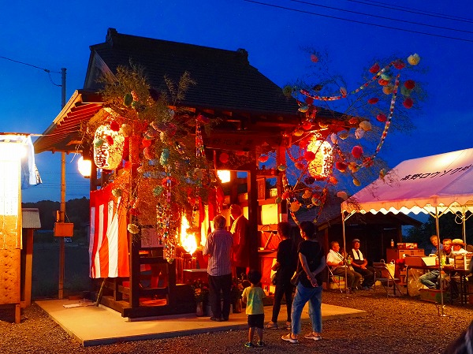
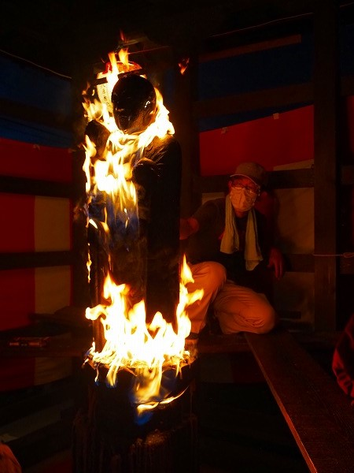
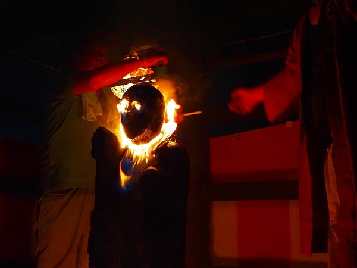

以前から行ってみたかった
高野ロウソク地蔵尊の祭礼に行ってみた。
当サイトの読者さんである
猫蔵さんという方からこの地蔵の事を聞いたのがきっかけだった。
調べてみたところ駐車場があるかどうか微妙な場所なので公共交通機関で行く事にした。
祭礼は8月の下旬、この日は日中用事があり、電車で茨城県の古河駅からバスを乗り継ぎ、最寄りのバス停に着いた時は
陽が暮れかかっていた。
田んぼが広がる街道沿いのバス停からは徒歩20分。
段々暗くなってきた。
あ～あ。とうとう陽が沈んだよう。
周囲は街灯など全くない。
たまに民家がポツポツと点在している程度。
あとは田んぼと畑しかない。
ほぼ真っ暗な道をスマホのライトを頼りに歩く。ライト持ってくればよかったよ。
段々不安になりつつも何となく人の気配がしてきた。
ああ、ここが
地蔵祭りの会場かあ。あるいは怪談で出てきがちな
偶然出会った田舎の怖い祭りのどっちかだな。
近づいてみたらやはり高野ロウソク地蔵の祭であった。よかった。

300年前から続く、という割には意外と規模は小さい。
テントの下には受付や役員の人達が10人ほど。
お地蔵さんのいる地蔵堂に3～4人。
そこに3～4人の参拝者が入れ替わり訪れる感じ。
2日間やっているので祭に訪れる人も分散されているのだろう。
あとは私を含んだカメラオヤジ数名と民放のテレビ局の取材クルーが数名といった感じ。
出店も何もない、アットホームな雰囲気の祭だった。
この祭りはお地蔵さんに
自分の身体の悪いところと同じ箇所にロウソクを点けて病気平癒を願うというもの。
つまりこういう事である。
うわー！
お地蔵さん火達磨じゃないの！
ロウソクは参拝者が点けるのではなく、後にいる世話役の人に身体の悪い箇所を伝えて、世話役の人が代わりに点けてくれるシステムになっている。
お地蔵さんの周囲には足場が組まれており、その足場を器用に行き来しながら世話役のオジサンが手際よくロウソクを奉納していく。
中々素人には難しい熟練の技だ。
一歩間違えたら
自分が火達磨になってしまうかも知れないというのに…。
こうしてロウソクを奉納して無病息災を祈願するのだ。
ロウソクの奉納は一箇所百円、全身は千円である。
気になる
全身コースだが、
こんな感じで全身を火達磨にしてくれます。
特に手や頭は形状的にロウソクを供えるのが難しいようだ。
その手際の良さは最早
ロウソク点け師と言っても過言ではない。
次々と全身コースのオーダーが入る。

それにしても熱い！
真夏ゆえただでさえ気温が高いのに、近づくと炎の熱でさらにヒートアップしている。
お地蔵さんにしてみればとんだ災難である。
基本的にはお地蔵さんは衆生を救うホトケとされていて、
庶民には一番馴染みの深い存在と言えよう。
それだけに他の諸仏よりもフランクに扱われている節がある。
例えば泥棒の身代りとして
縄で縛られたり、塩をかけられて
溶けちゃったり、味噌を
べったり塗られたり、等々。
それだけ親しみがある、という事なのだがそれにしてもいくらなんでもお地蔵さんの火炙りはハード過ぎるよね。

近くまで寄れないためお地蔵さんの表情までは判らないが、コレとか
スカルっぽくないすか？
火付け名人によるファイヤーワークに見とれていたらあっという間に終了の時間が近づいてきた。
享保4年に始まったこの祭りも2019年に300周年を迎えた。

7
テレビクルーが私に成り代わり色々インタビューしていた。
いわく、人々の病や厄を払ってくれる存在としてロウソク地蔵を誇りに思っているという。
かくして全身炎に包まれながら高野部落の夜は更けていくのであった。
帰り道？
もちろん真っ暗でしたとも！
必死の思いでバス停に着いたら1時間待ちでした。
真っ暗な割にトラックがガンガン飛び交う街道沿いで途方に暮れてしまいました。
で、興奮の祭りの数日後。
考えてみたら、ロウソク地蔵にあまり近づけなくて（燃えてるし）表情や細かいところが判らなかった（暗かったし←早くいけよ）ので
もう一度行ってみた！
バスの便が少ないので、今度は境町の道の駅で自転車を借りてロウソク地蔵に向かった。
この方が多少時間はかかるがバス待ちのロスが少ないのだ。
いや、車で行っても良かったのだが、この頃は何となく公共交通機関とレンタサイクルで珍寺に行く、というのがマイブームだったのだ。
で、田舎道をチャリで激走する事数十分。
ロウソク地蔵の案内看板が見えてきた。
ちなみに高野八幡神社はロウソク地蔵の東隣にある神社だ。
祭りの時とは打って変わって静かな地蔵尊。
祭りの時は紅白の幕を張り、様々な飾りがなされていて良く判らなかったが
壁のない建物だったんですね。
スケルトンのお堂に立つロウソク地蔵。
先日はお疲れ様でした…。
当日は全く表情など判らなかったが、
火炙りにされた割には穏やかな表情をされている。
先日見た時は表面がロウソクの蝋でテラテラ黒光りしていたが、祭りの後に掃除したのだろう。
蝋は綺麗に落とされていた。
実は石の上でロウソクを付けると蝋が石にしみ込んでしまい、結構取るの大変なんですよ。
よくお墓参りの際墓石に蝋を垂らしてロウソク立てる人いるでしょ。
アレやっちゃうと蝋が石に染み込んで絶対取れないからやらない方が良いですよ。
多分この石像も細かい凹凸があるから蝋を除去するのに結構大変だと思う。
ケルヒャーとかでジュバーってやれば簡単に取れるんだろうか？
皆さんの御苦労が偲ばれますなあ。
台座。
こちらはロウソクの跡が残っている。
実は現在の地蔵石像は2代目なのだ。
初代の地蔵は享保4年に建立された。
しかし毎年ジャンジャン燃やしているものだから破損してしまい、この台座だけを残して昭和11年に再建されたという。
お地蔵さんの胴体部分。
先の顔の画像は表情を捉えるためかなり増感して撮影したが、実際はこんな感じ。
普通の石像に比べてかなり黒い。
無論燃えて真っ黒、というのもあるが、蝋が染み込んで黒っぽくなったのではなかろうか。
端っこを少し触ってみたが指先に煤が付いた。
後頭部より天井を見る。
中央の天井が抜けているのはこの像が火達磨になるからに違いない。
そう言えば
祭りの最中もしょっちゅう天井や梁に水をかけて燃えないようにしていたっけ。
地蔵堂の隣に小さな祠があり、その中に
初代の地蔵尊が安置されていた。
胴体の
右手に持った錫杖の痕跡をわずかに留めている程度だった。
200回以上焼かれ続けるとこんな事になるんですね。
元々石は火には強くないのでどんどん爆ぜてしまうのだ。
それでもこうしてちゃんとお祀りしてあるところに地域の方々のこの地蔵尊に対する思いが感じられた。
今の地蔵尊も90年近く経っている訳だが、100年経つとこんな風になってしまうのだろうか？
身代りというにはあまりにも壮絶な祭りであった。
情報提供は猫蔵さんです